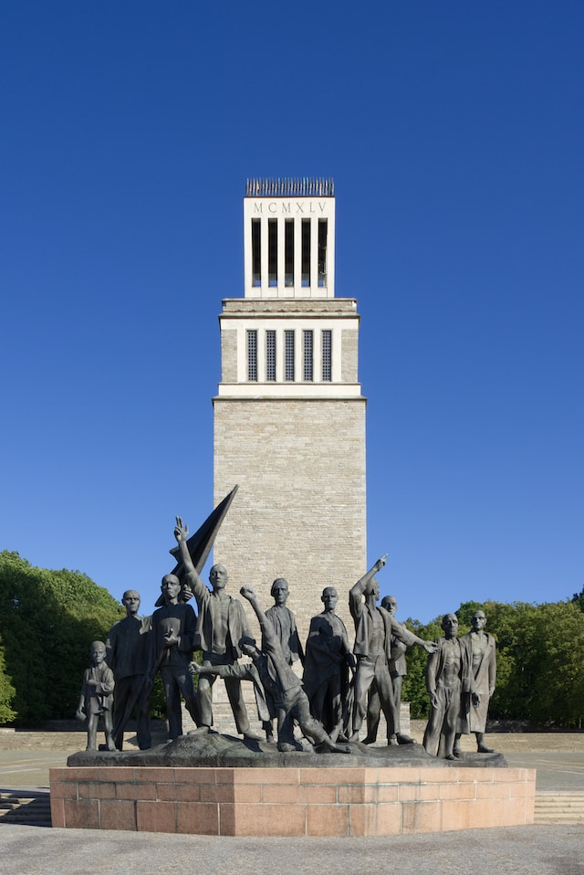

Goethe-Schiller-Denkmal
Das Goethe-Schiller-Denkmal ist ein bronzenes Doppelstandbild der deutschen Dichter Johann Wolfgang von Goethe und Friedrich von Schiller. Das 1857 eingeweihte Denkmal steht vor dem Deutschen Nationaltheater auf dem Theaterplatz in Weimar. Es wurde vom Dresdner Bildhauer Ernst Rietschel geschaffen. Das Denkmal stellt das Dichterpaar nebeneinander stehend dar: Goethe, der ältere der beiden, von kräftiger Gestalt und im Hoffrack, ruhig vor sich hinblickend, lehnt an einem Eichenstumpf; seine linke Hand erfasst die Schulter Schillers, während er ihm mit der rechten den Lorbeerkranz reicht. Schiller, jugendlich, von schlanker Gestalt und im langen Gehrock mit dem Schillerkragen und offener Weste, hält in der linken Hand eine Schriftrolle, während die rechte, halb ablehnend, nach dem Kranz greift. Um die literarische Ebenbürtigkeit zu betonen, sind die Dichter in gleicher Körpergröße dargestellt – obwohl Schiller mit 1,80 m deutlich größer als Goethe mit 1,69 m war.
Gedenkstätte Buchenwald
Der Name „Buchenwald“ wurde mit dem Konzentrationslager, das 1937 auf dem Ettersberg bei Weimar errichtet wurde, zum Synonym für die nationalsozialistischen Verbrechen. Seit 1945 nutzten die Sowjets das Gelände für eines ihrer Speziallager, nach 1950 baute die DDR hier die größte deutsche KZ-Gedenkstätte auf. 1990 wurde Buchenwald als Gedenkstätte neu konzipiert und für die Erinnerung an das Schicksal weiterer Opfergruppen geöffnet.
Herzogin Anna Amalia Bibliothek

Die Herzogin Anna Amalia Bibliothek ist eine öffentlich zugängliche Archiv- und Forschungsbibliothek für die europäische Literatur- und Kulturgeschichte mit besonderem Schwerpunkt auf der Epoche zwischen 1750 und 1850. In der Tradition einer Fürstenbibliothek verfügt sie über Sammlungen vom 9. bis zum 21. Jahrhundert, die laufend ergänzt, erschlossen und mit aktueller Forschungsliteratur zugänglich gemacht werden. Über 1 Mio Medien stehen über Ausleihe und Benutzung zur Verfügung, rund 150.000 Bände können im Freihandbereich des Studienzentrums vor Ort benutzt und entliehen werden. Das Historische Bibliotheksgebäude mit dem berühmten Rokokosaal als Teil des Ensembles „Klassisches Weimar“ wird pro Jahr von rund 100.000 Personen besichtigt.